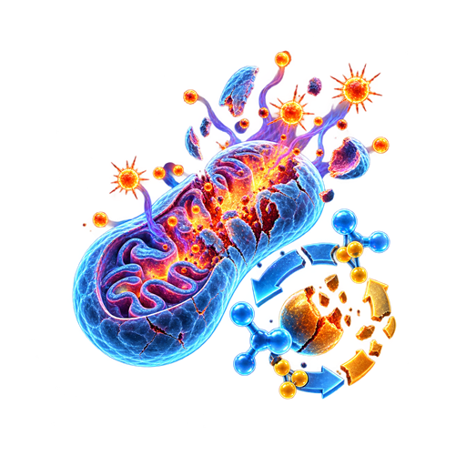

Stress exposure Psychological • Physical • Social • Environmental
Effective recovery Restoration of homeostasis
Early intervention / effective recovery may restore balance (partial or full)
Stress-response systems (Core pathways)
Maladaptive trajectory Persistent allostatic load & impaired recovery
Hormonal and neurotransmitter effects
Acute stress — transient changes Transient neuroendocrine activation
Balance shifts
Chronic stress — persistent dysregulation Neurotransmitter dysregulation Persistent neuroendocrine and neurotransmitter dysregulation
Acute physiological effects (Adaptive) Fight-or-flight readiness
Chronic physiological effects (Maladaptive) Multisystem physiological dysfunction
Feedback loops Cortisol feedback to HPA axis and brain circuits Cytokine feedback to brain and endocrine systems Peripheral organ feedback via vagal and humoral signals Acute psychological effects (Adaptive) Adaptive short-term behavioral response
Chronic psychological effects (Maladaptive) Neurobehavioral & psychological dysfunction
Downstream outcomes (Increased disease vulnerability)
Mental & neuropsychiatric outcomes Detailed mechanisms discussed separately
Systemic disease outcomes Detailed mechanisms discussed separately
02 Acute-to-chronic stress and disease vulnerability Simplified framework:
Stress exposure Psychological • Physical • Social
1. Acute to chronic transition: from adaptive response to maladaptive dysregulation
Complete recovery Resilience (Homeostasis restored)
2. Interacting core dysregulatory systemsChronic stress–induced dysregulation across multiple systems

Underlying & amplifying pathways: oxidative & metabolic dysregulation Oxidative stress, mitochondrial dysfunction, and metabolic inflexibility amplify and link all core systems.
3. Disease vulnerability & clinical outcomesA. Mental & neuropsychiatric disorders
B. Systemic disease & metabolic vulnerability
C. Pathological loops — self-amplifying Stress sensitization → Increased allostatic load → Persistent neurobiological change → Greater disease risk
4. Progressive cognitive vulnerability
Heterogeneous trajectories; not inevitable
5. Neurodegenerative & AD-related processesInteracting pathological processes driving neurodegeneration
Legend: Feedback loop (Self-amplifying)
1. Stress & dysregulation
Acute response(Adaptive Allostasis) Stressors (Psychological / Physical / Activation (HPA / SAM / Recovery (Homeostasis)
Transient activation → Goal recovery
Incomplete Allostatic
Chronic response(Maladaptive Allostasis) Repeated / prolonged Dysregulation Allostatic
Persistent dysfunction → Accumulating load
2. Core mechanisms under chronic stress
3. Mental & neuropsychiatric disordersVulnerability factors Biological vulnerability Environmental stressors Early-life adversity Lifestyle factors Mental & neuropsychiatric disorders
Pathological loops Stress sensitization Increased allostatic load Persistent neurobiological changes Potential cognitive progression
4. Dementia: pathogenesis, manifestations & progressionA. Dementia pathogenesis:interacting core processes
Mutually reinforcing and interacting
B. Neurodegeneration Neuronal loss Network disruption Brain atrophy Neurotransmitter loss C. Clinical manifestations
D. Dementia progression
Progressive decline in cognition,
Influenced by: Cumulative stress load Vascular & metabolic health Inflammation Genetics Lifestyle Social factors